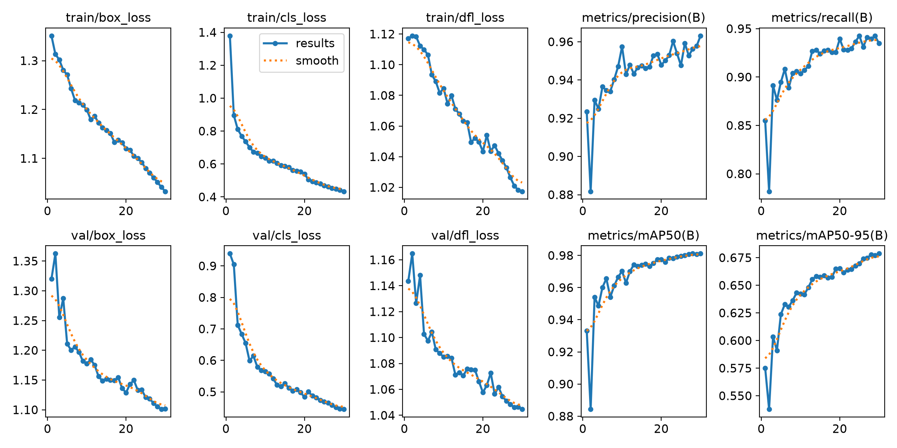
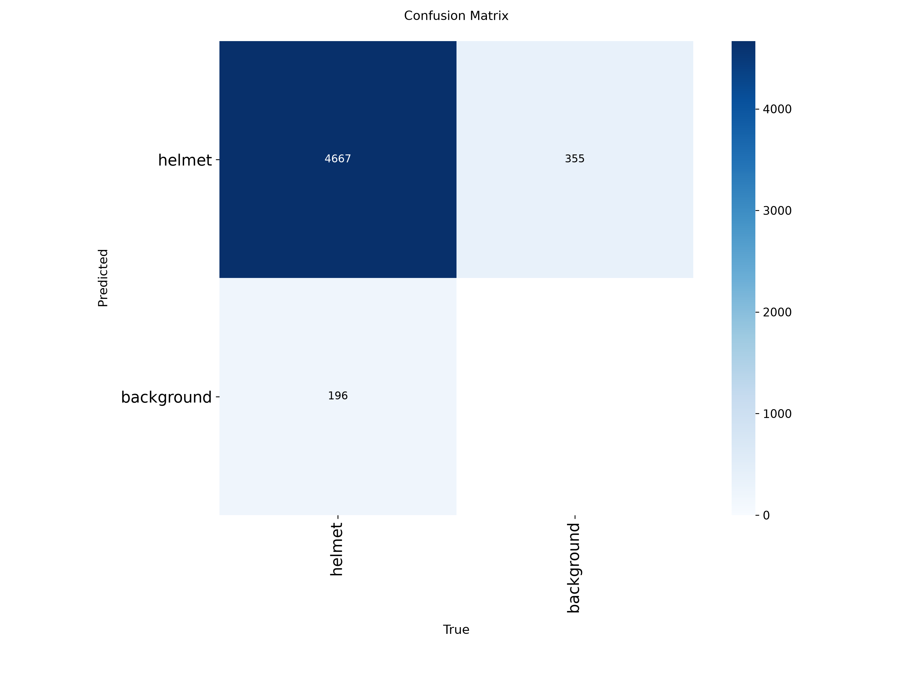
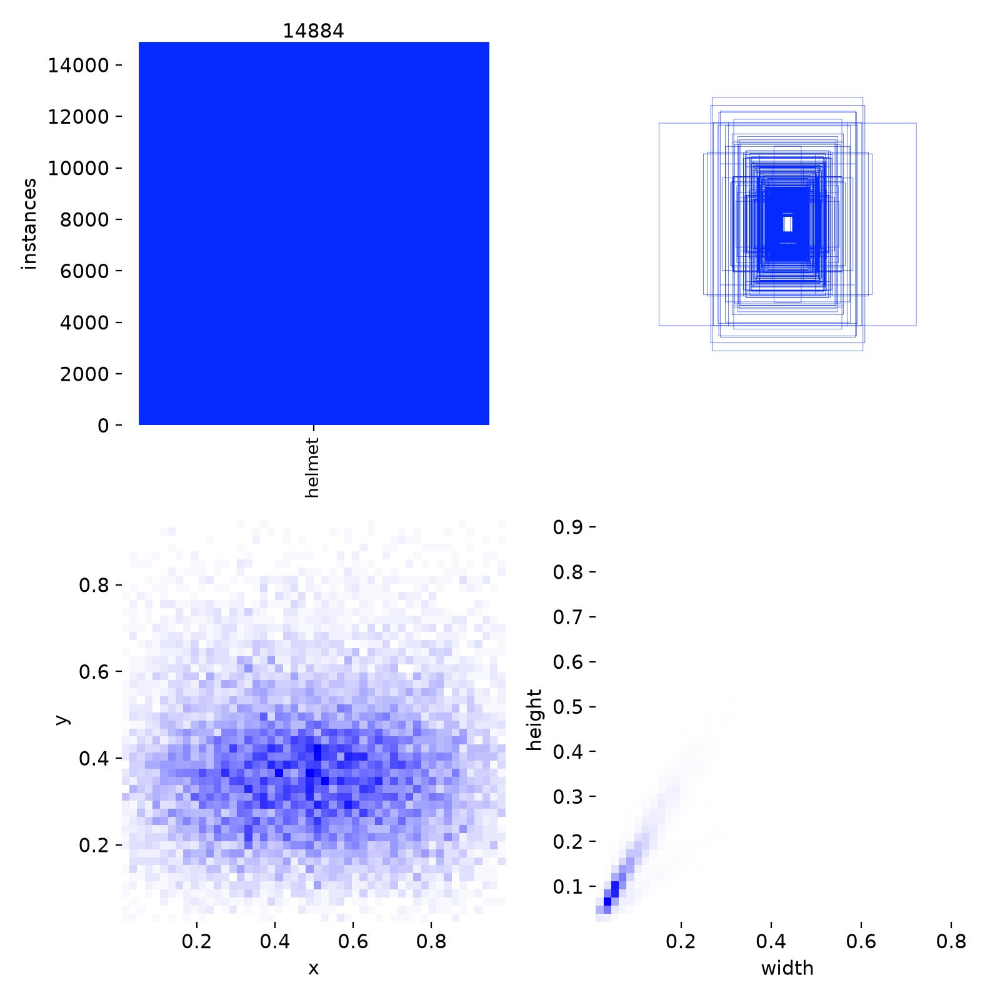
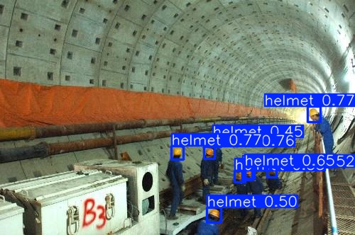

Практика: дообучение и оптимизация YOLO для нового класса объектов. Модель YOLO11n была дообучена на классе helmet, затем экспортирована и проверена в PyTorch, ONNX Runtime CUDA, TensorRT FP16 и TensorRT INT8.
| Runtime | Model | Precision | Recall | mAP50 | mAP50-95 | Inference_ms | FPS | Notes |
|---|---|---|---|---|---|---|---|---|
| PyTorch | best.pt | 0.963 | 0.935 | 0.981 | 0.679 | 1.3 | 769 | Original fine-tuned PyTorch model |
| ONNX Runtime CUDA | helmet_yolo11n.onnx | 0.960 | 0.937 | 0.981 | 0.679 | 3.0 | 333 | ONNX export validated with CUDAExecutionProvider |
| TensorRT FP16 | helmet_yolo11n_fp16.engine | 0.960 | 0.937 | 0.981 | 0.679 | 1.5 | 667 | Optimized TensorRT FP16 engine |
| TensorRT INT8 | helmet_yolo11n_int8.engine | 0.960 | 0.932 | 0.978 | 0.663 | 1.9 | 526 | INT8 quantized TensorRT engine |





